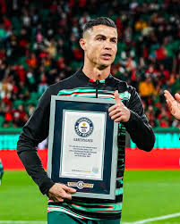

Главная Спорт Успеваемость Олимпиады

Участие в олимпиадах, конкурсах, конференциях и других образовательных мероприятиях является важной частью моего обучения. Подобные мероприятия предоставляют возможность проверить уровень подготовки, расширить кругозор, получить новые знания и приобрести полезный опыт. Они помогают не только углубить понимание изучаемых дисциплин, но и развивают умение применять полученные знания в нестандартных ситуациях.
Олимпиадная деятельность способствует развитию логического мышления, внимательности и способности самостоятельно находить решения сложных задач. Подготовка к таким мероприятиям требует серьёзного подхода, дисциплины и постоянной работы над повышением уровня знаний. Благодаря этому удаётся совершенствовать свои навыки и получать новые образовательные результаты.
Участие в олимпиаде по информатике позволило мне продемонстрировать знания в области информационных технологий, алгоритмического мышления и решения практических задач. Работа над олимпиадными заданиями способствует развитию навыков анализа информации и поиску эффективных способов решения поставленных задач.
Особое место среди достижений занимает участие в математической олимпиаде. Математика развивает способность к логическому анализу, помогает находить закономерности и принимать обоснованные решения. Полученный опыт стал важным этапом в развитии аналитического мышления и навыков работы со сложными задачами.
Значительный интерес для меня представляет участие в научно-практических конференциях. Такие мероприятия позволяют познакомиться с современными тенденциями развития науки и технологий, обменяться опытом с другими участниками и представить результаты собственной работы. Конференции помогают развивать исследовательские навыки и формируют интерес к дальнейшему изучению различных направлений профессиональной деятельности.
Полученные грамоты и награды являются подтверждением проделанной работы, настойчивости и стремления к достижению поставленных целей. Каждое достижение напоминает о важности постоянного развития и мотивирует к дальнейшему совершенствованию своих знаний и навыков.
Активное участие в жизни колледжа также играет важную роль в моём развитии. Участие в различных мероприятиях позволяет развивать коммуникативные способности, навыки работы в коллективе и организаторские качества. Подобная деятельность помогает приобретать новый опыт и расширять круг общения.
Подготовка к олимпиадам и конкурсам требует значительного количества времени и усилий. В процессе подготовки приходится изучать дополнительную литературу, выполнять практические задания и совершенствовать уже имеющиеся знания. Такая работа способствует формированию навыков самостоятельного обучения, которые являются важными для будущей профессиональной деятельности.
Каждое участие в образовательных мероприятиях позволяет получить новый опыт, узнать больше о выбранной сфере деятельности и определить направления для дальнейшего развития. Даже если результат не всегда оказывается максимальным, сам процесс подготовки и участия приносит большую пользу и способствует личностному росту.
Считаю, что достижения в образовательной деятельности являются результатом целеустремлённости, ответственности и постоянной работы над собой. Они отражают не только уровень знаний, но и готовность к решению сложных задач, стремление к развитию и желание добиваться поставленных целей.
В будущем планирую продолжать участвовать в олимпиадах, конкурсах, конференциях и других образовательных мероприятиях. Это позволит расширять свои знания, получать новый опыт и совершенствовать профессиональные навыки. Стремление к саморазвитию и постоянному обучению остаётся одним из главных принципов моей учебной деятельности.